2.1 Earth's Address
We live in a part of space called the Solar System: a collection of eight major planets (Mercury, Venus, Earth, Mars, Jupiter, Saturn, Uranus and Neptune) in elliptical orbits around a star we call the Sun.
- The planets orbit because of the force of gravity.
- All the planets revolve around the Sun in the same direction.
- The Solar System also contains moons, asteroids, dwarf planets, Kuiper belt objects, comets, dust, and a lot of empty space!
Leaving the Solar System, at a distance of 4.2 light years we reach Proxima Centauri, the nearest star to us after the Sun.
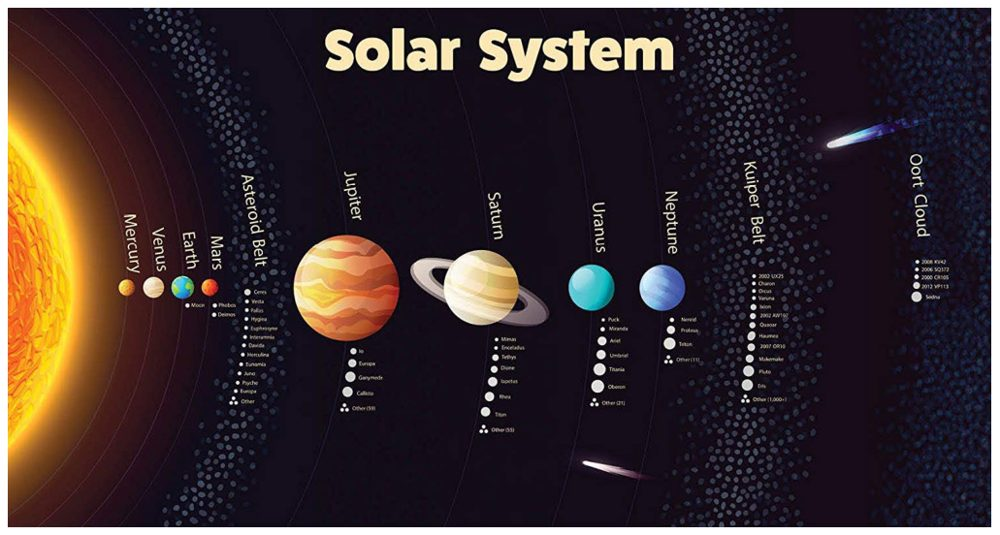
A mnemonic helps you remember something. One for the planet order is: My (Mercury) Very (Venus) Easy (Earth) Method (Mars) Just (Jupiter) Speeds (Saturn) Up (Uranus) Naming (Neptune). Write your own mnemonic for the planet order.
Any sentence with words starting M, V, E, M, J, S, U, N in that order, e.g. "My Very Eager Mother Just Served Us Noodles."
Put the planets in order from the Sun.
- 2. 3. 4. 5. 6. 7. 8.
The Milky Way and beyond
Our Solar System is only a tiny part of one galaxy, called the Milky Way. Galaxies contain many stars, planets, gas and dust, and the stars orbit the centre of the galaxy because of gravity. From Earth, we see the Milky Way as a bright band of stars across the night sky.
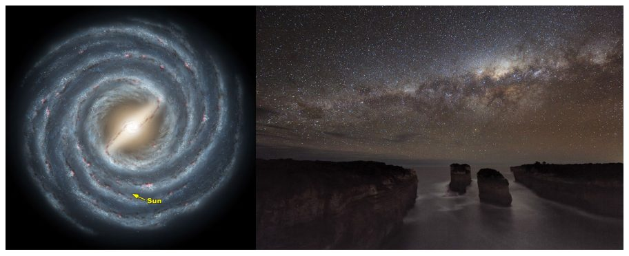
Why don't we have full photos of the Milky Way, our own galaxy?
We live inside the Milky Way. It is so large that we would need to travel many thousands of light years out of it to be in a position to photograph the whole galaxy, and we don't have the technology (or time) to do that.
Beyond our galaxy, the Milky Way is part of a group of about 30 galaxies called the Local Group. The nearest is the Large Magellanic Cloud, about 160 000 light years away. The largest member is the Andromeda spiral galaxy, which is expected to collide with the Milky Way in about 4 billion years.
How many galaxies?
This image from the James Webb Space Telescope is of one of the darkest parts of the night sky. Almost every point of light in it (except those with flares) is a galaxy, and most galaxies contain hundreds of billions of stars.
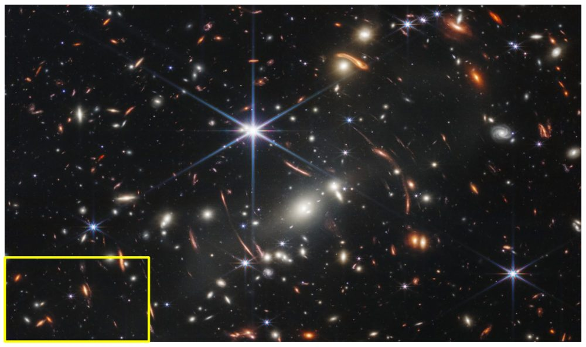
Give answers in scientific notation to 1 decimal place.
- Estimate how many galaxies are in this image.
- From your estimate, calculate how many stars would be visible if the average galaxy has 150 billion (1.5 × 1011) stars.
- The image covers less than a tenth of the width of the full Moon, making it just a 30 millionth of the whole sky. Estimate how many stars are in the Universe.
Answers will vary with your estimate. Example:
- About 200 galaxies in a highlighted section about 1/16 of the image, so about 200 × 16 = 3.2 × 103 galaxies.
- 3200 × 1.5 × 1011 = 4.8 × 1014 stars.
- 4.8 × 1014 × 3.0 × 107 = 1.4 × 1022 stars. (Current estimates are about 1024 stars.)
Activity: relative distances in the Solar System
There are 11 cards for objects in the Solar System, with distances in astronomical units (AU), where 1 AU is the average distance from the Sun to the Earth. Using a scale of 1 m : 1 AU, mark out the relative locations of the objects on the oval with a tape measure. For example, Mercury at 0.39 AU stands 0.39 m (39 cm) from the "Sun".
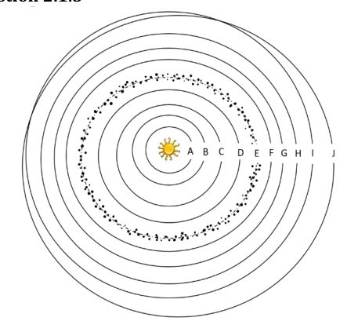
The object at the orbit labelled J is classified as a:
The planet at orbit B is:
Which list includes only the Jovian (gas) planets?
A–D are the rocky planets, E is the asteroid belt, F–I are Jupiter, Saturn, Uranus and Neptune, and J is a dwarf planet (Pluto).
Order these terms from the smallest scale to the largest: Milky Way (MW), Solar System (SS), Cosmic Web (CW), Local Group (LG).
Smallest: → → → :largest
2.2 View of the Universe
Ancient view: geocentric
How the Universe began has been debated and studied for a very long time. In ancient times, people believed the Earth was at the centre of the Universe: a geocentric model (geo = Earth; centric = centre). The planets and stars were thought to be attached to giant spherical shells, "the Heavens", that revolved around the Earth.
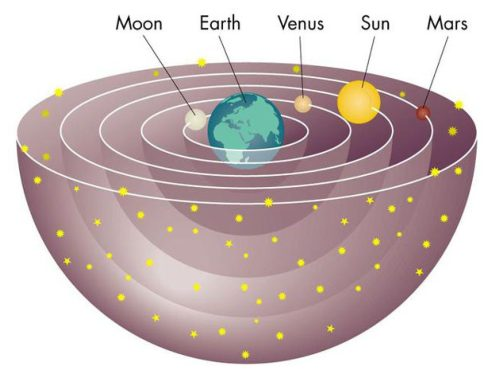
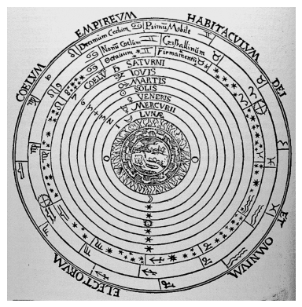
Around the Earth in the chart are: Lunae (Moon), Mercurii (Mercury), Veneris (Venus), Solis (Sun), Martis (Mars), Iovis (Jupiter), Saturni (Saturn), the constellations and signs of the zodiac, and Empireum Habitaculum Dei (Home of the Gods).
Heliocentric Universe
As astronomers made careful measurements of the stars and planets, they realised that the Earth orbits the Sun. A new, Sun-centred (heliocentric) model was proposed, drawn here by the astronomer Copernicus. We now know the Sun is the centre of the Solar System, not the centre of the entire Universe.
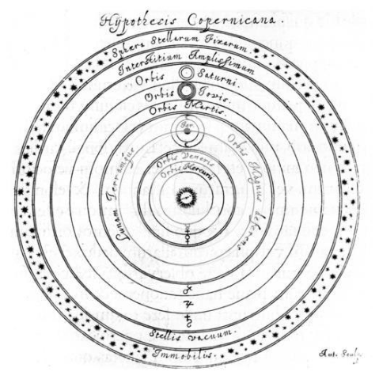
Modern view
Today we believe:
- there is no centre to the Universe
- the Universe is bigger than we can see, even with the most powerful telescopes
- the Universe is changing over time.
Big Bang theory: Hubble's law
The idea of the Big Bang has been around for about 100 years. In 1929, Edwin Hubble found that the light from distant galaxies showed they were moving away from the Earth, and that the further away a galaxy is, the faster it is moving away. This was true for all distant galaxies, in every direction. This led to Hubble's law:
- V is the speed of the galaxy moving away from us (km/s).
- D is its distance from Earth, in megaparsecs (Mpc). 1 Mpc = 3.1 × 1022 m (you won't need to convert units).
- Ho is the Hubble constant, approximately 70 km/s/Mpc.
Hubble's original data show a linear relationship between recession velocity and distance. The gradient is the Hubble constant.
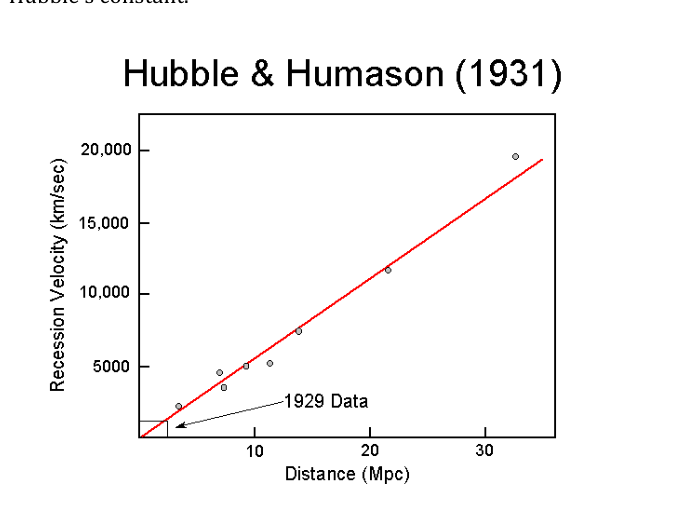
Using Ho = 70 km/s/Mpc, calculate the distance to the galaxy Cygnus A, which is moving away from Earth at 16 260 km/s.
D = V ÷ Ho = 16 260 ÷ 70 = 232 Mpc.
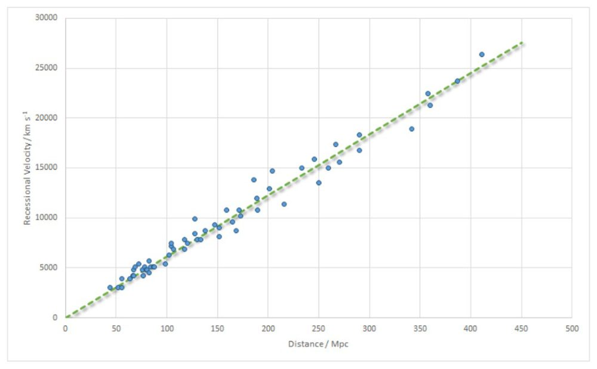
Using the graph, estimate the value of Hubble's constant and give an appropriate unit.
The Hubble constant is the gradient of the graph (rise ÷ run). From this graph it is about 60 km/s/Mpc (answers will vary slightly with the points chosen).
We now know that the Earth and planets orbit the Sun. Explain why the heliocentric view is still considered incorrect.
The heliocentric model puts the Sun at the centre of the whole Universe. The Sun is only the centre of the Solar System: it is one of billions of stars in the Milky Way, which is one of billions of galaxies, and the Universe has no centre.
The Big Bang
The furthest galaxies are moving away from each other at enormous speeds. The theory says that space itself is expanding, carrying the galaxies with it. If you imagine time running in reverse, all the matter and space must have started from one tiny point. It seems the Universe was born from some kind of explosion or expansion: the Big Bang.
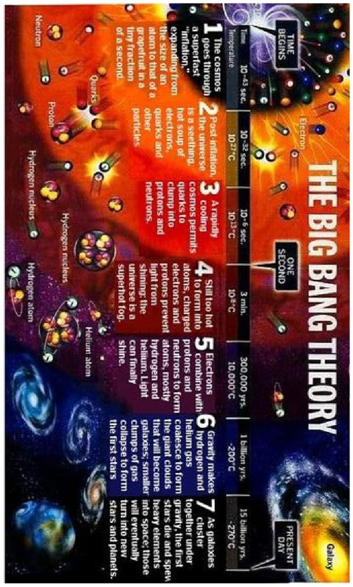
2.3 Evidence for the Big Bang theory
The Big Bang theory does not try to explain why the expansion started; it only describes how the Universe has expanded and evolved since then.
We can't collect evidence from the very first moments, because the Universe was too dense for light to pass through. Since we make our measurements using light, we can't see what happened until the Universe became transparent, about 300 000 years after it began.
There are three main pieces of evidence for the theory:
- The amount of helium in the Universe
- The Cosmic Microwave Background Radiation
- Redshift (the Doppler effect)
The amount of helium in the Universe
Today, helium can only be created in the core of a star, where the temperature and pressure are high enough to fuse hydrogen atoms together. But there is too much helium (about 8.7% of the Universe) for all of it to have been made by stars. The Big Bang theory says the early Universe was hot and dense enough to form helium, so some helium was made before any stars formed.
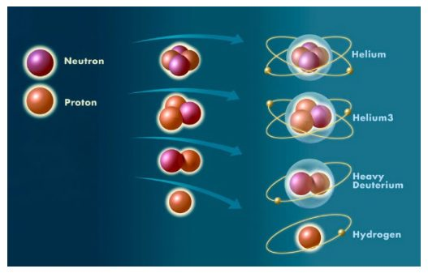
The Cosmic Microwave Background Radiation (CMBR)
All objects emit light (radiation), and the colour of the light depends on their temperature: if they are hot enough, we can see it.
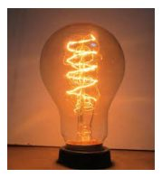
If the Big Bang theory is true, there must be radiation left over from when the early Universe was very hot, and it should come from every direction.
- The early Universe was very hot and dense, and light bounced around and couldn't travel freely.
- About 300 000 years after the Big Bang, the Universe expanded and cooled enough for light to travel freely.
- This light was very high energy, but as it travelled through expanding space, its wavelength was stretched. Now it is in the microwave part of the spectrum.
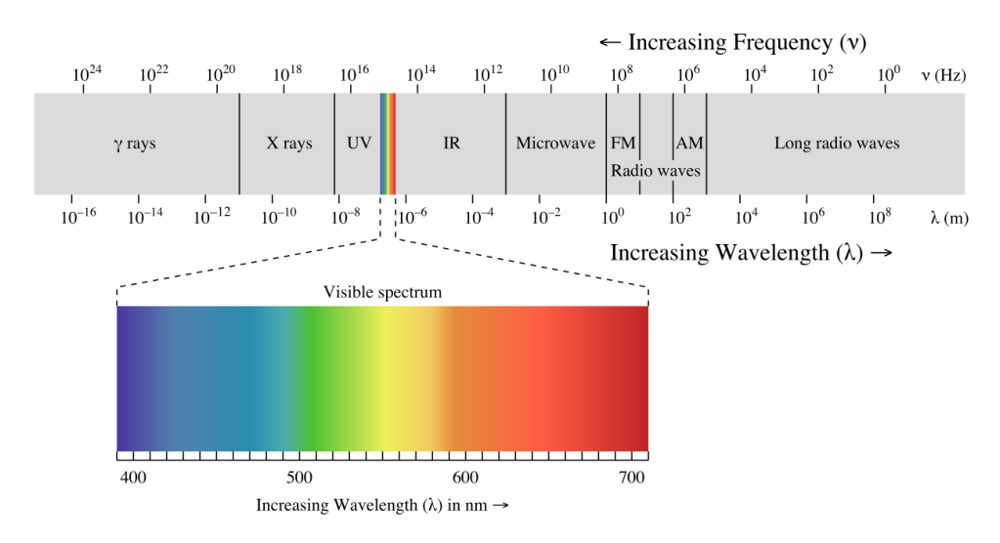
In 1965 this radiation was discovered by accident. Penzias and Wilson were testing a sensitive new radio antenna and found a strong background noise. After eliminating every possible source (including removing nesting pigeons!), they found it was microwave radiation from every direction: the Cosmic Microwave Background radiation (CMB). Its wavelength corresponds to a temperature of 2.7 K (−270°C), the temperature of interstellar space.
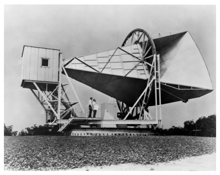
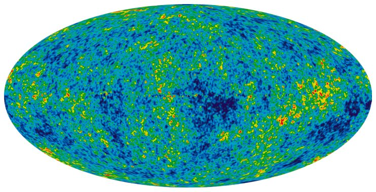
In the distant future the CMB will be redshifted further, into the radio wave part of the spectrum.
The Doppler effect
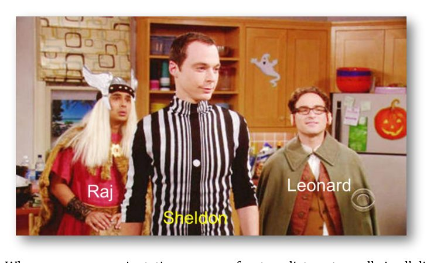
When a wave source is stationary, its wavefronts spread out equally in all directions. When the source is moving, the wavefronts bunch up in front of it and spread out behind it. An observer therefore receives a higher or lower frequency, depending on whether the source is moving towards or away from them. For sound, this means a higher or lower pitch, even though the source itself hasn't changed.
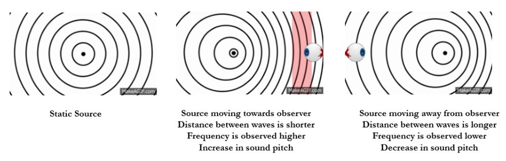
Activity: Doppler effect demonstration
Your teacher swings a Doppler effect apparatus (a buzzer) around their head.
Describe the change in pitch as the apparatus moves towards you compared with away from you. Is it higher or lower than the buzzer's "resting" tone?
As it moves towards you, the pitch sounds higher (higher frequency); as it moves away, it sounds lower (lower frequency). The sound waves are compressed in front of the source and stretched out behind it.
What happens to the pitch variation if the apparatus is swung faster? How does the speed of the source affect the frequency reaching your ears?
The faster it is swung, the more dramatic the change in pitch. A higher source speed creates a greater change in the observed frequency.
If the buzzer emitted light instead of sound, what colour shift would you see as it swings towards you, and as it swings away? (Recall c = fλ.)
Moving towards you: a blueshift (shorter wavelengths, higher frequency). Moving away: a redshift (longer wavelengths, lower frequency).
If we lived in a universe where every galaxy we saw was redshifted, what would that tell us about the space between us and those galaxies?
That the galaxies are all moving away from us: the space between us and them is expanding.
Astronomers use the Doppler effect to find "spectroscopic binary" stars (two stars orbiting each other). How would the light from a binary system be similar to the sound of the swinging buzzer?
As the two stars orbit, one moves towards Earth while the other moves away, then they swap. The spectral lines would wobble back and forth, shifting towards blue and then towards red in a repeating cycle, just like the buzzer's pitch rises and falls with each swing.
Redshift
Each element has its own electron shell arrangement with a unique pattern of energy levels. Excited atoms emit light at specific wavelengths (colours) according to their energy levels. This pattern is the element's emission spectrum, and every element has a unique emission spectrum.
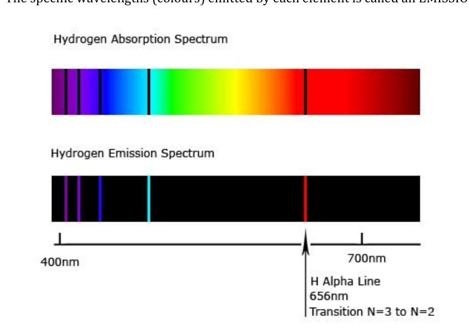
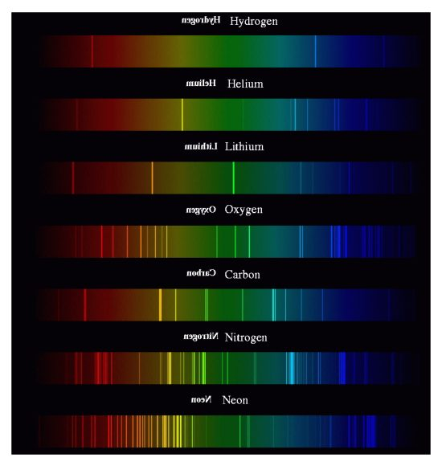
Stars emit light. Viewing it through a spectroscope and comparing it with known emission spectra tells us which elements the star contains.
If an object emitting waves moves away from you, the waves are stretched, just like the sound of a car getting lower in pitch as it drives away. Light from distant galaxies is stretched because they are all moving away from us (Hubble's law). Stretching the wavelength shifts the light towards the red end of the spectrum: redshift. Light from more distant galaxies is shifted further towards the red, so more distant objects are moving away faster.
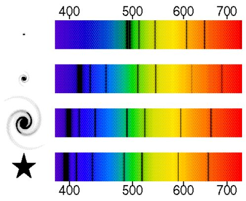
The diagram shows the emission spectra of four reference elements (lithium, hydrogen, helium and sodium) and the spectrum observed from a distant star. Which elements are found in this star?
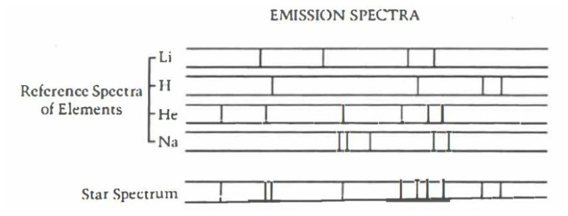
Which of the following is not evidence for the Big Bang theory?
Explain what the CMBR is and how it provides evidence for the Big Bang theory.
The CMBR is left-over light from the early Universe, arriving from every direction in space. It was released when the Universe became transparent, about 300 000 years after the Big Bang, as very high-energy light. As space expanded, its wavelength was stretched into the microwave region (2.7 K). Radiation coming evenly from everywhere could only have come from a time when the whole Universe was hot and dense, as the Big Bang theory predicts.
Explain what redshift is.
Redshift is the increase in the wavelength of light, shifting it towards the red end of the spectrum. It happens because the source of the light (a star or galaxy) is moving away from us (and, for distant galaxies, because space is expanding).
Spectral lamp activity
Use spectroscopes to look at the emission spectra of sunlight, fluorescent lighting and spectral lamps of various elements, and describe each spectrum.
Describe the spectra you saw. 1. How is each element's distinct emission spectrum used to identify the elements in a star? 2. If the light from a distant star had lines missing from its spectrum, what would that mean?
Spectral lamps: a series of separate coloured lines, a unique pattern for each element. Sunlight: a continuous spectrum of colour. Fluorescent light: bands of colour in various parts of the spectrum.
- By matching the lines in a star's spectrum with the unique patterns of known elements (allowing for redshift), we can work out what the star is made of.
- The star may not contain that element (except hydrogen and helium, which are in all stars), or the light is so redshifted that those lines have moved out of the visible spectrum.
Applet: http://chemistry.bd.psu.edu/jircitano/periodic4.html
2.4 Measurements of the Universe
Some big numbers
Astronomy has become a very rigorous science. We now have reliable ways of measuring the distance to stars and galaxies, the amount and types of light they produce, how fast they are moving relative to us, whether stars have planets, and the elements in those planets' atmospheres.
There are an estimated 170 to 200 billion galaxies in the observable Universe. Some of the Universe is unobservable because light from very distant galaxies hasn't had time to reach us, and because the early Universe wasn't transparent.
Our galaxy, the Milky Way, has around 100 billion stars, and it is thought to be fairly average, so:
That's just the stars in the observable Universe!
Distances
The Universe is very big, so our Earth units are too small. Astrophysicists use the most convenient unit for the distance being measured:
- the astronomical unit
- the light year
- the parsec.
The astronomical unit
The astronomical unit is good for distances within the Solar System. 1 AU is the distance between the Earth and the Sun: 1 AU = 1.5 × 1011 m.
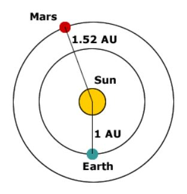
| Planet | Average distance from the Sun (AU) |
|---|---|
| Mercury | 0.39 |
| Venus | 0.72 |
| Earth | 1.00 |
| Mars | 1.52 |
| Jupiter | 5.20 |
| Saturn | 9.58 |
| Uranus | 19.2 |
| Neptune | 30.1 |
Activity: distance to the Sun
Aim: to find the distance from the Earth to the Sun using a pinhole screen, and compare it with the known value.
Materials: metre ruler, retort stand (about 76 cm high), clamp, coat hanger, sticky tape, pin, 2 sheets of A4 paper, calculator, and the Sun!
Theory: this experiment uses similar triangles (ratios). With Li = distance from the pinhole to the Sun's image, Ls = distance to the Sun, Di = diameter of the Sun's image and Ds = diameter of the Sun:
Method: tape paper over the coat hanger to make a screen, and make a tiny pinhole in it. On the other sheet draw two lines about 7 mm apart and measure the gap exactly. Tape this sheet to the base of the retort stand, and clamp the pinhole screen about 40 cm above it. Outside, point the pinhole at the Sun and move the screen until the circle of sunlight exactly fills the gap between the lines. Measure Di (the gap) and Li (the distance between the screens, in mm). The accepted diameter of the Sun is Ds = 1 392 000 km.
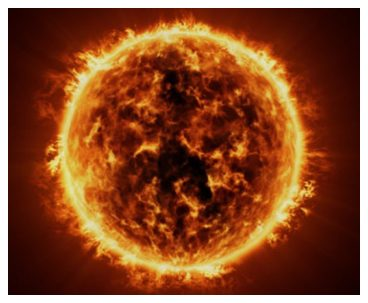
A student measures Di = 7.0 mm and Li = 760 mm. Using Ds = 1 392 000 km, calculate the distance to the Sun, Ls, in km.
Ls = Li × Ds ÷ Di = 760 × 1 392 000 ÷ 7.0 = 1.51 × 108 km (the mm units cancel).
The correct distance to the Sun is about 149 600 000 km. How do you calculate the percentage error? Identify two factors that contributed to the error, and how they could be minimised.
Percentage error = (difference ÷ correct value) × 100, rounded to the nearest whole number.
Sources of error: the diameter of the Sun's image (Di) is tiny, so even 0.5 mm of error in measuring it or judging when the light circle exactly fills the lines makes a large percentage error; the pinhole isn't a perfect point, so the image edge is blurry; and the distance Li may not be measured exactly.
Minimising them: use a longer distance between the screens (larger image, smaller percentage error), make the pinhole as small and round as possible, view the image in shade, and repeat the measurement several times and average.
The light year
Light travels at a constant speed through space (300 000 km/s), so we can use it to define a unit. The light year (ly) is the distance light travels in one year.
The light year is a good unit for distances between stars within a galaxy. The closest star to the Sun, Proxima Centauri, is 4.24 ly away.
The parsec (pc)
The parsec is the biggest unit astrophysicists use. It is based on parallax: the change in a star's apparent position as the Earth moves around the Sun. We measure the angular position of a star, then measure it again six months later. The two positions differ relative to a background of very distant stars.
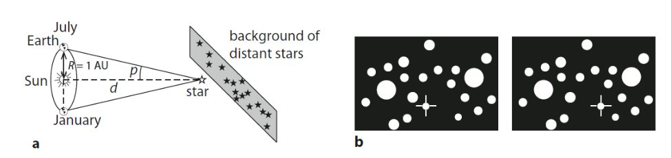
A parsec is the distance to a star whose parallax angle is 1 arcsecond:
- 1 arcsecond = 1/3600 of a degree (just as 1 second is 1/3600 of an hour).
- 1 pc = 3.26 ly = 3.09 × 1016 m
The parsec is good for distances between galaxies, but even then we still need scientific notation!
Calculate the parallax angle, to 4 decimal places, of the star Arcturus, which is 10.32 parsecs away.
p = 1 ÷ d = 1 ÷ 10.32 = 0.0969 arcseconds.
The star Proxima Centauri is 1.3 parsecs (4.243 ly) from Earth.
- Light from Proxima Centauri takes years to reach Earth.
- 4.243 ly in kilometres is km. (Type answers like 4.0e13.)
- Its parallax angle is arcseconds.
- A light year is the distance light travels in a year, so 4.243 ly takes 4.243 years. b. 4.243 × 9.5 × 1012 ≈ 4.0 × 1013 km. c. p = 1 ÷ 1.3 = 0.769 arcseconds.
The diagram shows parallax. Which time of the year matches each view from Earth?
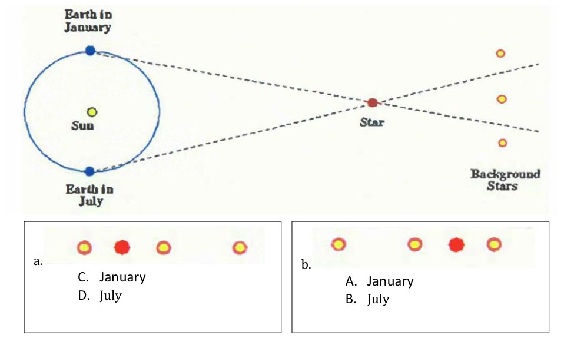
View a: View b:
The approximate number of stars in the Milky Way is:
Measuring speeds
Everything in the Universe is in motion, and stars and galaxies seem to be moving away from us at enormous speeds. Astrophysicists don't usually give a galaxy's speed in km/s (which depends on where you measure from). Instead they measure its redshift (z). The amount the spectral lines shift towards the red is directly related to how far away the object is and how fast it is moving away from us.
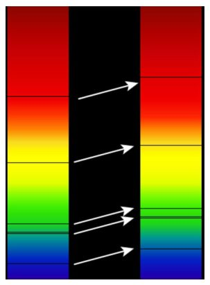
Activity: Big Bang model
Aim: to model the expansion of the Universe using a balloon.
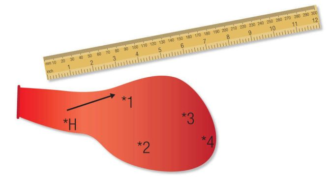
Method:
- With a black marker, draw a "home" spot (H) near the mouth of a flattened balloon, and four other spots labelled 1 to 4.
- Measure the initial distance from H to each spot (d, in cm).
- Blow up the balloon and tie it off.
- Measure the final distance from H to each spot (D, in cm), and calculate how far each spot moved.
| Star 1 | Star 2 | Star 3 | Star 4 | |
|---|---|---|---|---|
| Initial distance from Home (cm) | 2.1 | 2.0 | 4.0 | 6.0 |
| Final distance from Home (cm) | 5.7 | 5.3 | 9.0 | 11.2 |
| Distance moved (cm) | 3.6 | 3.3 | 5.0 | 5.2 |
(Sample results.)
Blowing up the balloon simulates the expansion of the Universe for a set time. Since each "star" moved for the same time, the distances moved also represent their speeds. Plot the final distance (x-axis) against the distance moved (y-axis), and draw a line of best fit.
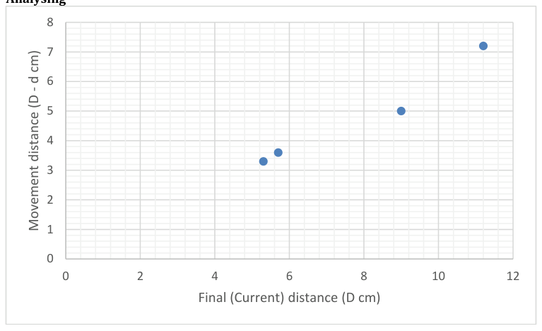
Interpreting:
- As the balloon inflates, the dots move .
- The further away the dot is, the more it .
Modelling:
- The balloon represents the .
- Blowing up the balloon represents the early Universe .
- Popping the balloon represents a contracting Universe in its final stage, going through the Big .
- Are the points moving across the surface of the balloon? Explain. 2. Did the points move apart by the same amount? What was measured?
- No. The points aren't moving through the balloon material: the space (rubber) between the points is stretching, just as space itself is expanding in the Universe.
- No. The further away a point was, the more it moved, because there was more balloon material between it and home, so more of it stretched in total. The distances were measured.
- How well did the balloon represent the Big Bang theory? 4. Does the Universe change over time in this model, and does this match the real Universe? 5. Describe the benefits and drawbacks of this model.
- Well enough to understand Hubble's finding (more distant objects recede faster) and that the stretching of space causes galaxies' recession.
- Yes: as time passes the model universe gets bigger, like the real Universe. But to match the real Universe, the balloon would have to expand faster and faster over time.
- Benefits: shows the stretching of space and why more distant galaxies move away faster. Drawbacks: it is a 2D surface representing a 3D Universe; it doesn't show the increasing rate of expansion; and it doesn't include the effects of gravity (galaxies themselves don't stretch).